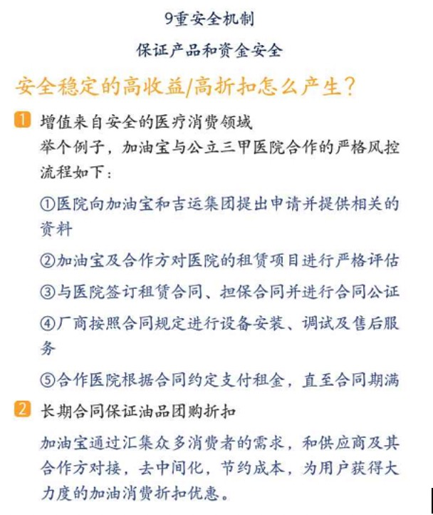

互联网金融概述
互联网金融是当代热门行业，其将互联网与金融结合在一起，很好地发挥出互联网金融的优势，“互联网+金融”的组合方式，使互联网金融具有及时性，高效性，海量性，互动性等特点。
互联网金融的资金增值方式多种多样，常见的有在医疗器械租赁的投资，车辆购买与租赁中差价的增值，原油波动的增值等等。
以下是加油宝科技服务（深圳）有限公司（下称“加油宝”）的资金增值方式：
互联网金融结合了互联网和金融的特点，正不断冲击传统金融。
现代的传统银行自打百年前建立起来时，从某种角度来看，一直做的其实就是P2P业务：吸引一批人把钱存进来，然后再贷款给另外一批人。
这种模式下，平台和银行的借贷在成本上已经相差无几，P2P平台承担更高的风险，做银行不愿意做的业务，比银行提供更高的收益。
据不完全统计，目前国内约有超过2000家P2P平台，由于投资收益可观，在2013年几乎每天有超过一家P2P平台注册上线。不过整个P2P行业交易规模的增长速度都在下降根据来自艾瑞的P2P行业报告，2012年增长217%，达到228.9亿；2013年增长197%，规模680.3亿；而2014年达112%，规模1442.9亿。
互联网金融带有互联网属性，进入门槛低，近年来p2p平台如雨后春笋般涌现出来。但是，互联网金融的本质是金融，金融本身的经营门槛是相当高的，很多人不具备经营金融、风险管理的能力。
从2014年9月加油宝APP的推出至今，已有605.8万用户在使用加油宝，成交金额超过55亿。%，达到228.9亿；2013年增长197%，规模680.3亿；而2014年达112%，规模1442.9亿。
其中，注册用户男女比例为8：2，忠实用户男女比例为7：3。
从年龄上分析，30-40岁年龄段占49.9%，75，80后是中流砥柱。
从投资金额分析，年龄多高投资金额越大。
用户覆盖全国90%的区域，其中三四线城市用户数量快速增长。
在互联网金融行业迅猛发展的年代，为了缓解市场压力，弥补市场空缺，企业逐渐把重心放在团队建设上。为了解决技术问题，企业常常聘请软件开发和风险控制等专业人员组成技术小组，这样的团队方式，对产品的推出及软件的稳定性和投资的安全性建设成效突出。
互联网金融发展迅速，需要企业能够对突发事件、政策具有快速反应能力。设立多样化的互联网金融系统，加强各职能部门间的协调合作，使得线上业务与线下业务相互结合。
加油宝以“客户至上”为原则，每天服务时间超过12小时，用户可以通过电话或在线联系客服，亦可在贴吧，客服中心留言，疑难问题可以通过邮件处理。
加油宝以其独特的风控要求和安全体系，提供绝对安全的投资平台，公开相关合作协议，保证100%兑付。
要想成为一个杰出的企业，绝不是闭关造车可以取得的，需要加强与企业间的合作，通过合作来加强知名度和使用率。注重产品创新和多形式运营，使产品更能满足消费者的需求。
加油宝注重与外部渠道合作，以此提高知名度和曝光率。